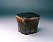
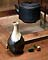
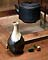
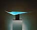
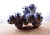
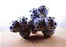

JAPAN -
Ceramics and Photography, Past and Present
Exhibition in the Deichtorhallen Gallery, Hamburg, Germany
The exhibition JAPAN
- Ceramics and Photography, Past and Present, being held
in the Deichtorhallen
Gallery in Hamburg, Germany, compares two disparate art
genres in Japan - that of tradition-laden pottery and ceramics and
that of the more recent field of photography.
Ceramics occupy a special place in Japanese society and culture,
embodying certain cultural, philosophical or religious principles
associated with Zen Buddhism, the Tea
Ceremony and the Japanese ideal of beauty and humility.
But Japanese ceramics are not necessarily
functional - sculptural objects were also made, e.g. religious figurines,
Buddha statues etc. In Japan today, pottery is made that is based
on traditions going back thousands of years, but also ceramics that
break with those traditions, e.g. those of the Sodeisha
movement.
  
There is an important thread that runs through traditional Japanese
ceramics - that of the 'happy accident'. Flying ash from the Anagama
kiln, fuming from adjacent pots, unintentional cracks etc. - in
the world of Japanese aesthetics, all these add to, rather than
detract from the value of a craft object. But it must be remembered
that that value is more of a spiritual, rather than a monetary one,
i.e. the object becomes 'priceless'. One such object would be the
famous Raku tea bowl by the Japanese master Koetsu (1558-1637),
'Fujisan'.
Ceramic artists represented in this exhibition are selected from
a broad range of styles - Seto,
Bizen,
Hagi
and Karatsu.
The Modernists are also represented, making pieces more akin to
design or conceptual art than anything bearing resemblance to to
the enigmatic raku tea bowl. Some of these works, e.g. Nakashima's
Porcelain Form, seem to defy the characteristics of the material.
  
Contrasting the 'Eastern' genre of ceramics is that of the more
'Western' oriented field of photography. Japanese photography is
not laden with the burden of centuries of tradition and thus is
free to be more adventurous, more avant-garde.

It takes its themes from Japanese, but also from Western culture,
setting up a dichotomy that generates a healthy tension in the works
displayed. This tension is also evident in the sometimes troubled
relationship between nature and progress, two apparently opposite
poles, that the Japanese have embraced equally. And herein lies
perhaps the main link back to ceramics, the tear in the very fabric
of the Japanese psyche - the tug of war between the old and the
new.
|
Ceramic Artists:
Yo AKIYAMA
Sueharu FUKAMI
Kiyoyuki KATO
Chieko KATSUMATA
Hideo KOBAYASHI
Kosei MATSUI
Hideo MATSUMOTO
Kinpei NAKAMURA
Oguna NAKANO
Harumi NAKASHIMA
Toshio OHI
Hoju SAKAI
Akira SOMA
Shigemitsu TAKEUCHI
Sajiro TANAKA
Seimei TSUJI
Morihiro WADA
Akira YAGI
|
Photographers:
Nobuyoshi ARAKI
Mikiko HARA
Naoya HATAKEYAMA
Takashi HOMMA
Osamu KANEMURA
Chikashi KASAI
Norio KOBAYASHI
Hiroyuki MASUYAMA
Ryuji MIYAMOTO
Daido MORIYAMA
Yoichi NAGANO
Yurie NAGASHIMA
Asako NARAHASHI
Keiko SASAOKA
Yoshiko SEINO
Masato SETO
Hiroshi SUGIMOTO
Takashi YASUMURA
Tsukasa YOKOZAWA
|
Gallery Press Release (German
only)
More Articles |


{kind=link}
{kind=link}
{kind=link}
{kind=link}
{kind=link}
{kind=link}
{kind=link}